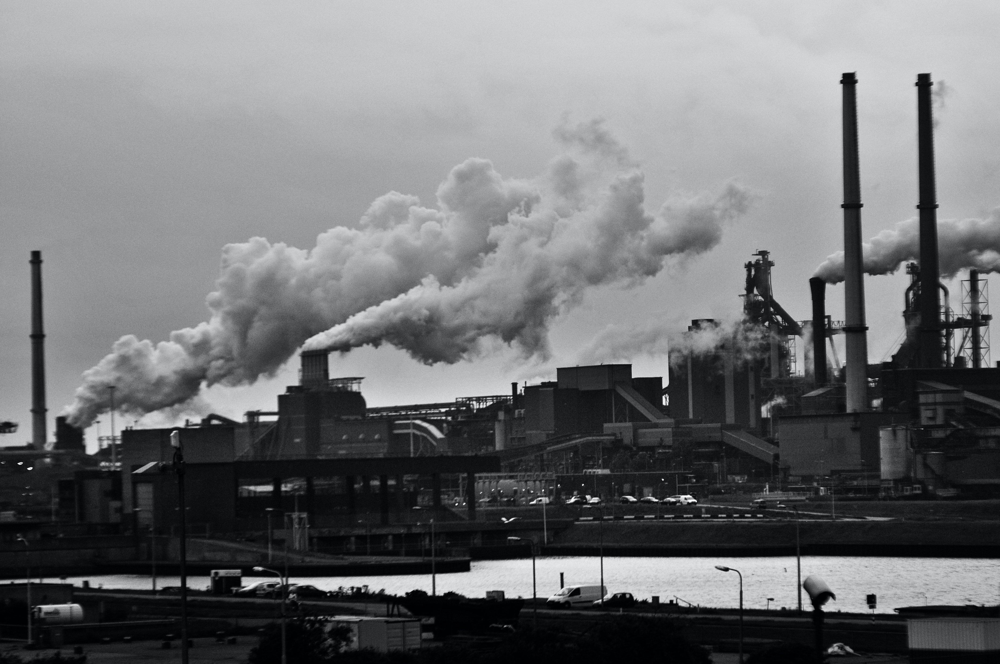

problem water pollution is the release of substances into bodies of water that makes water unsafe for human use and disrupts aquatic ecosystem. water is considered polluted if some substances or condition is present to such
a degree that the water cannot be used for a specific purpose. .it is a result of people activities. it impedes the development Main water causes 1- Industry Industry is an extremely big source of water pollution which produces pollutants
that are harmful to people and the environment .Many industrial facilitates use fresh water to carry waste from plants into lakes,rivers and oceans. This industrial waste which makes the temperature rises,this reduce the oxygen in water
2- agriculture wastes Major source of pollution is discharge of domestic, agriculture wastes and excessive use of pesticides and fertilizers.It plays a major role in the water Industry. Farms discharge large quantities of organic matter,drug
residents and saline drainage into water bodies.Excessive irrigation can affect water quality by causing erosion and transporting nutrients. As shown in figure 1 according to the recent report by the world health organization. It confirmed
that 38 million people drink contaminated water in egypt Impacts 1-diseases There are many diseases caused by pollution in water. sensitivity,inability to breathe,feeling suffocated and skin diseases are examples for diseases by water
pollution 2- harm of sea life As a result of water pollution, the harm of water pollution and its impact on the life of marine organisms increases. ti will lead to poisoning and then death of all.so,the world will lose its most important
wealth 3- plant poisoning where the seeds absorb chemical pollutants that are found in the soil from aquatic environments which leads to poisoning of plants from those materials and the toxins can also be transmitted to the organisms.


How to stop water polution
Some general ways to prevent water pollution
Plastic Waste Reduction Plastics are commonly washed into the ocean and other bodies of water, which only serves to degrade the quality of the water.Along with water bottles, plastic is used in a myriad of different items that people use on an everyday basis, which include everything from clothes to various items around the home. To help reduce the amount of plastic waste that gets cycled into the environment, it’s recommended that you avoid using plastics whenever possible. Seek alternatives for plastic bottles, plastic utensils, and straws. Whenever you use plastic, make sure that you recycle.

Water conservationIf you want to do your part to keep water clean and pure in a manner that will protect the environment, it’s important that you focus on water conservation when possible.

Green AgricultureThe agricultural sector uses upwards of 70 percent of the surface water supplies around the earth for everything from livestock production to farming. Unfortunately, agriculture is the primary cause of water pollution. Whenever it rains, the pesticides and fertilizes wash away with the stormwater, which takes viruses and bacteria into the waterways. It’s possible, however, for agriculture to be more friendly to the environment.
To foster the use of green agriculture, consider planting trees and other plants nearby bodies of water, which will keep chemicals from being washed away when it rains. You should also avoid using pesticides that contain harmful chemicals.

Wastewater Treatment Likely the most effective way to reduce water pollution is by treating some of the water before it’s reintroduced into the waterways. This is a highly effective solution because wastewater treatment facilities are able to remove nearly all pollutants in wastewater via a chemical, physical, or biological process. Sewage will be taken through several chambers of the facility to slowly reduce its toxicity levels.
.jpg)